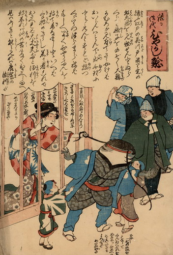

仮宅をひやかす鯰を引き留める遊女と禿。鯰は職人姿で、ひげを引っ張られている。他の職人はそれを遠巻きに見物している。
出典：親書誌：U426_nichibunken_0205：治る御代ひやかし鯰；ナオルミヨヒヤカシナマズ／日付：2010／資源識別子：U426_nichibunken_0205_0001_0000
Copyright (c)2010- International Research Center for Japanese Studies, Kyoto, Japan. All rights reserved.